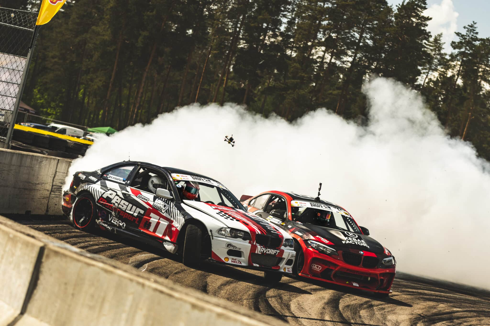
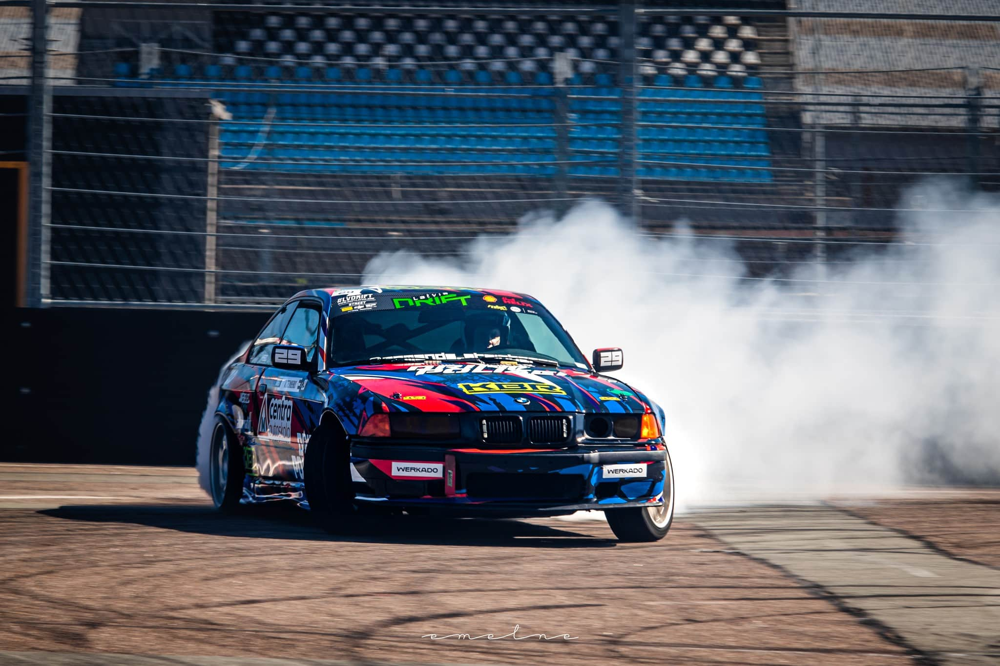
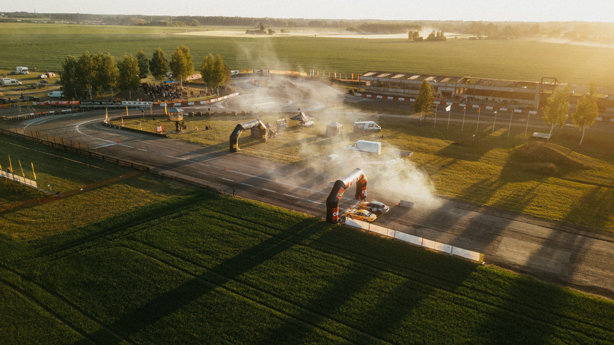

Tiek piedāvāta ekskluzīva drift experience pasākuma organizēšana komandai.
Katrs brauciens ietver: 1–2 iesildīšanās apļus un pilnvērtīgu tandem drift run.
Vienlaicīgi braucienā piedalās: 2 automašīnas, 2 piloti un 2 pasažieri. Viena brauciena ilgums: aptuveni 3–5 minūtes aktīvā laika trasē.
Papildus pašiem braucieniem dalībnieki varēs iejusties īsta drifta padoka atmosfērā un piedalīties dažādās aktivitātēs:
Tas padara pasākumu nevis vienkārši par vizināšanos, bet par pilnvērtīgu immersive motorsport experience ar dalībnieku iesaisti.
Ja ir elastība attiecībā uz norises datumu, mēs varam piemeklēt dienu, kad trasē norisināsies vietējo drifta sportistu treniņi.
Tas ļaus viesiem vērot citu automašīnu treniņus, redzēt vairāk tehnikas un sajust īsta drifta pasākuma atmosfēru. Tajā pašā laikā garantētā programma viesiem paliek nemainīga: 10 tandēma braucieni.
Papildu informācija: Kā nokļūt
Turp: Vilciens Rīga — Daugavpils atiet plkst. 07:55, pienākšana stacijā Kūkas plkst. 09:44. Tālāk kājām aptuveni 2.5 km (30 minūtes) uz dienvidiem cauri ciemam un pāri šosejai A12 tieši līdz trasei.
Atpakaļ (Dienas vilciens): Kājām 2.5 km līdz stacijai Kūkas, atiešana plkst. 16:11, pienākšana Rīgā plkst. 18:00.
Atpakaļ (Vakara vilcieni): Ja uzkavējaties ilgāk, varat paņemt taksometru līdz Krustpils stacijai (Jēkabpils, ~15 km). No turienes uz Rīgu kursē vilcieni plkst. 18:59 (Rīgā plkst. 20:41) un plkst. 21:12 (Rīgā plkst. 22:55).